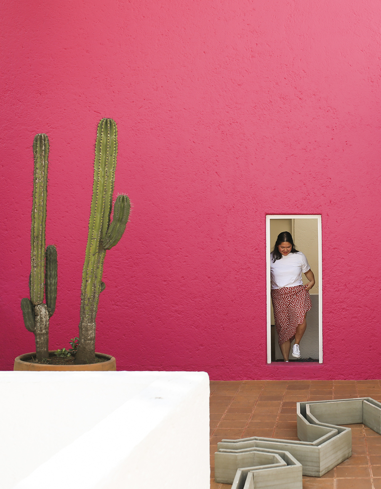

Serial side project-starter, carbohydrate enthusiast,
perpetual list-maker, novice coder, former dancer and New Hampshire resident,
occasional photographer, wannabe polymath, lifelong Boston Red Sox
fan.
I am constantly inspired by the ways that design can impact the way
that we live and interact with one another, and thinking about our responsibility as designers to implement solutions at different scales.
On my mind lately: the reclaiming and redefining of Philippine vernacular,
how we can begin to formalize informal settlements, finding ways to democratize good urban design, and how to make this silly website responsive.
Side Projects (Realized + Unrealized)
A collective named Desk Space, a food zine named Listahan, an Instagram called @loxandlocsin, a series of zines centered around dinner.
Elsewhere
Are.na,
Twitter,
E-mail.
A PDF with some accomplishments on it is available upon request.